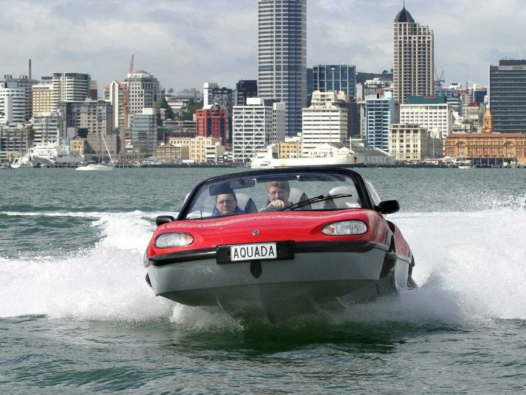
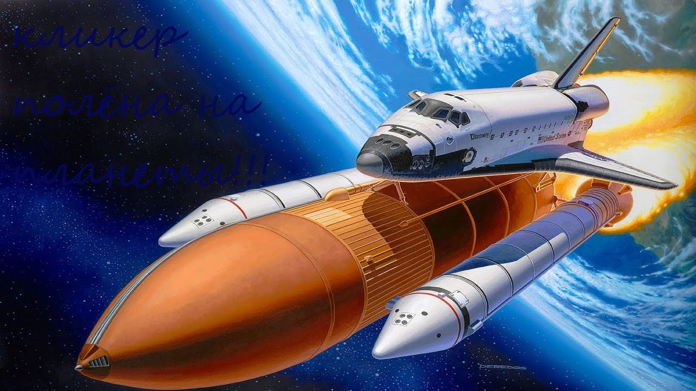
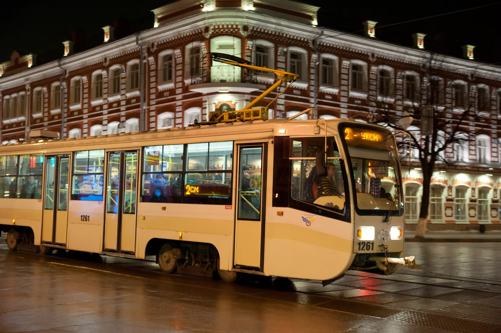

Автомоби́ль — моторное дорожное и вне дорожное транспортное средство, используемое для перевозки людей или грузов.Основное назначение автомобиля заключается в совершении транспортной работы. Автомобильный транспорт в промышленно развитых странах занимает ведущее место по сравнению с другими видами транспорта по объёму перевозок пассажиров. Современный автомобиль состоит из 15—20 тысяч деталей, из которых 150—300 являются наиболее важными и требующими наибольших затрат в эксплуатации. Понятие включает легковой автомобиль, грузовой автомобиль, автобус, троллейбус, бронетранспортёр, но не включает сельскохозяйственный трактор и мотоцикл.
2Во́дный тра́нспорт — вид транспортa, перевозящего грузы и/или пассажиров по водным путям сообщения, как естественным (океаны, моря, реки, озера), так и искусственным (каналы, водохранилища). Основным транспортным средством является судно.Морские суда должны обладать мореходностью, т. е. способностью не разрушаться и не тонуть при волнении; морские суда крупнее речных. Для погрузки и выгрузки служат порты (морские и речные); для пассажиров сооружают морские и речные вокзалы. Водный транспорт отличается высокой провозной способностью и очень низкой себестоимостью перевозок; кроме того, он позволяет перевозить почти любые крупногабаритные грузы. Далее, водный транспорт жизненно важен там, где невозможны сухопутные перевозки: между континентами, островами, а также в слабоосвоенных районах. Важной разновидностью водного транспорта являются паромы. Скорость движения на водном транспорте относительно невысока, поэтому в настоящее время он почти не используется для деловых пассажирских перевозок. Зато он очень популярен у туристов и вообще любителей активного отдыха. Используются и большие туристические суда, и разнообразнейшие катера, яхты и лодки. Особый вид водного транспорта — буер — передвигается под действием силы ветра на коньках по замёрзшей поверхности воды.
23Возду́шный транспорт — понятие, включающее как собственно воздушные суда, так и необходимую для их эксплуатации инфраструктуру: аэропорты, диспетчерские и технические службы. Воздушный транспорт — самый быстрый вид транспорта. Основная сфера применения воздушного транспорта — пассажирские перевозки на расстояниях свыше тысячи километров. Также осуществляются и грузовые перевозки, но их доля очень низка. В основном авиатранспортом перевозят скоропортящиеся продукты и особо ценные грузы, а также почту. В таких случаях, когда в месте посадки отсутствует аэродром (например, доставка научных групп в труднодоступные районы) используют не самолёты, а вертолёты, которые не нуждаются в посадочной полосе.
3 4Космический транспорт — это вид транспорта, используемый в безвоздушном пространстве для перевозки людей или грузов. Что касается полетов человека, то, как правило, пассажиры являются одновременно и командой, управляющей транспортным средством. Некоторые космические суда просто перевозят грузы, не имея человеческой команды управления. Эту роль берут на себя роботы либо автоматизированная система управления. В космическом деле используются ракетные технологии. Существует несколько типов космических ракет, которые подразделяются по принципу целей, выполняемых в безвоздушном пространстве: орбитальные и суборбитальные системы, межпланетные, межзвездные, межгалактические и околоземные космические аппараты.
4 5Общественный (коммунальный) транспорт — разновидность пассажирского транспорта как отрасли, предоставляющей услуги по перевозке людей по маршрутам, которые перевозчик заранее устанавливает, доводя до общего сведения способ доставки (транспортное средство), размер и форму оплаты, гарантируя регулярность (повторяемость движения по завершении производственного цикла перевозки), а также неизменяемость маршрута по требованию пассажиров.
5